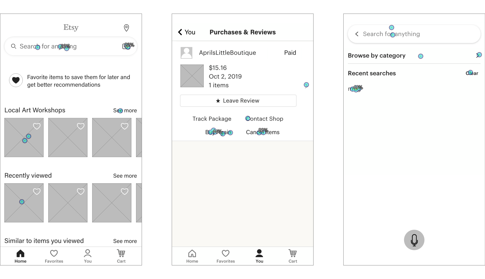

Online Education Platform Redesign
Date: Summer 2019, Time: 3 Months,
Role: UX Design, Team: Creative.
Role: UX Design, Team: Creative.
Background Story
During my internship at QuinStreet, I created new user flows for education verticals. The client is OnlineDegrees, which offers accredited online degrees & programs. Its competitive advantage over the competitors is the ability to empower users to plan their prospects and choose the most promising outcomes in an unconstrained way. I provided iterative designs in web and mobile to reduce task times and improve users’ subjective satisfaction.
Problem Space
Due to time constraints, our engineers had to quickly ship AllStar Form Flow (UX Flows of Online Degrees & Programs Searching) with the compromise of UX. However, after I did some quick usability testings, I discovered some horrendous usability issues.
Inefficiency of Use
Users have to constantly shift between pages to search among the mixed data.
Low Visibility of Searching Process
Users mess everything up easily because they can easily lose track of each individual searching progress.
Poor Mental Model of Program Recommendation
Users have no idea what comprise a program recommendation and what key info they need to focus.
Fuzzy Information Architecture
Users are struggling with what to do next when they finish the searching process. There is no way to get back to the landing page.
Now, here come the design challenges:
How might we communicate the searching process to people?
How might we empower users to find the expected degree programs efficiently?
How might we inform users of searching progress?
Fast Iterations
Through an interactive design process, I was quickly moving between paper and digital prototyping, testing prototypes with users, and getting feedback from my manager, social media team and engineering team. From each iteration, I learned something valuable. Some helped me make small usability improvements, some helped me make major changes in my design direction.
According to the data analysis by Marketing and Media teams, we found that 90% traffic comes from mobile, so we made the decision to start with mobile then desktop. We chose the most common mobile screen resolution in 360×640 (17.9%) and desktop screen resolution in 1366×768 (23.49%) according to the statistics from StatCounter Global Stats.
Initial iterations for a clear searching process
After a few brainstorming sessions, I experimented with all different ways of walking users through degree programs searching process and designing delightful user experience: steppers, a searching guide section, tips, navigation bar, searching guide page…

WIRE FLOW
I outlined the wireframes of the new version of Etsy based on the IA and created several key path scenarios to further analyze the flow of interaction of the updated version of Etsy.
FIRST CLICK TESTING
I conducted a first click test about the low fidelity wireframes of Etsy Redesign. I tested 3 main screens of 2 main wire flows. Finally I got the heatmaps which can be a visual clue to show how users might interact with these wireframes.

Design
Based on the analysis of first click testing result and in-person usability test, I decide to keep the picture search function and local art workshops on the home page, buy again and cancel items function on the purchase & reviews page, recent searches on the search screen. I tried to explore multiple designs for different screens. After several rounds of critiques on the wireframes, I moved on to high fidelity mockups. The motivation of the visual design was to create a aesthetic look that entices more users to use Etsy. I followed the current Etsy style guide and continued using Etsy orange color as the main theme.
Redesign
I conduct the in-person usability test to know how users interact with the new design of Yelp and gather the feedback to identify usability issues.
According to the feedback, I decided to improve the visuals, the information hierarchy, and overall experience of the app so I decided to redesign it. To create a better consistency, I came up with the redesign.
ITERATION
Strategy
SOUL
Enjoy the vintage world.
MISSION
BRAND KEYWORDS
Interactive, convenient, clear, consistent, creative, engaging, aesthetic.
BUSINESS EXTENSION
Local Art Workshop: Add local art workshop section to the home page. Charge hosts who provide workshops 10% service fee.
Reflection
In terms of this project, I realized that simple UI embellishment can only produce surface delight. The deep delight can only be achieved based on the fundamentals of the product right like functional, usable, useful, desirable and reliable interfaces. Delight is about the users. Delight consists of pleasure, flow and meaning. I want to achieve delight in product design since it is missing for most of the products. I will focus more on the needs of users and help users become better at the thing they are trying to achieve.